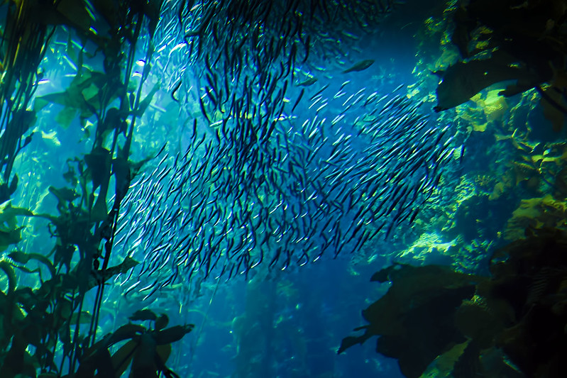

Overfishing is the depletion of the amount of fish in (a body of water) by too much fishing.
What is Overfishing Doing?
Overfishing is a very big issue in all types of bodies of water, but especially oceans. In oceans, the population sizes of multiple species have decreased significantly directly from overfishing. Not only have many species of fish depleted, but overfishing also indirectly impacts other species and ecosystems. It effects other species that are not being fished due to them eating those fish, or those fish eating other species who are overpopulated or are predators.
When one species of fish's population is effected, it has a chain reaction to other species or ecosystems. Some of these examples include:
- Coral reef production decreases.
- Destruction of habitats.
- Disappearance of Predators who eat those animals.
- Fish that were previously eaten by another species significantly increase.
- Decrease in biodiversity.
- Decrease in predators source of food.
Did you know?
400 MILLION pounds of fish are caught everyday.
90% of the stocks of large predatory fish, such as sharks, tuna, marlin, and swordfish, are already gone!
The main species at risk for extinction due to overfishing are: sharks and bluefin tuna.